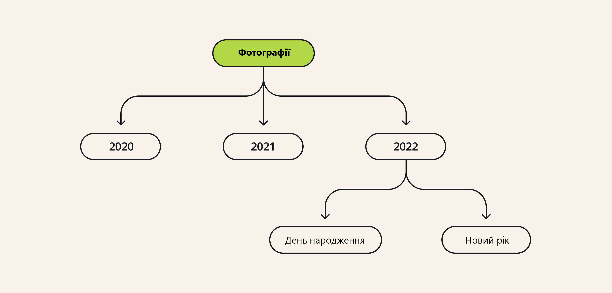
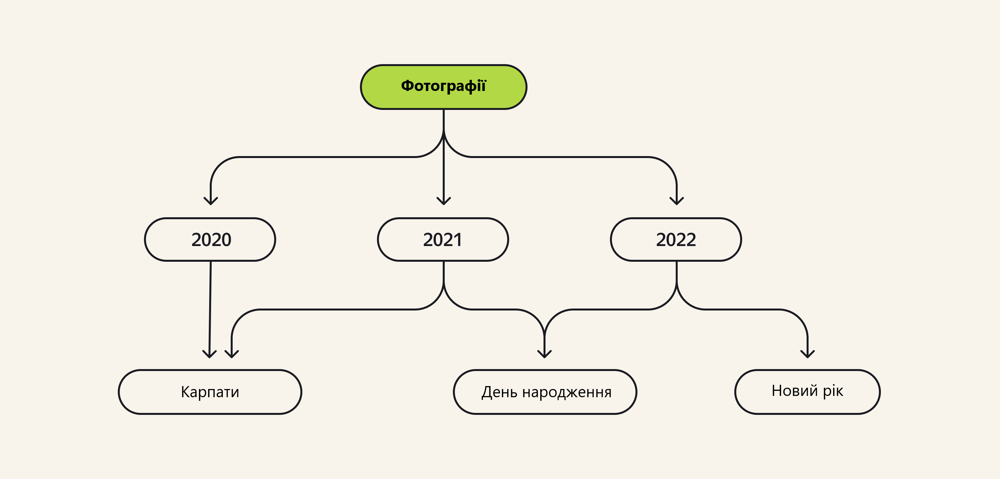

flowchart TD
A[Які способи оплати є у додатку?] -->|Тільки оплата карткою| B[Які ще можуть бути опції при оплаті?]
B -->|Карткою при отримані <br><br> Готівкою при отримані <br><br> Система швидких платежів| C[Які плюси для користувачів від кожної опції?]
C -->|Користувачам не потрібно вводити дані картки на сайті <br><br> Оплата відбувається швидше| D[Які складнощі можуть виникнути при впровадженні кожної опції?]
D -->|Необхідно видавати кур'єрам термінали оплати <br><br> Інтеграція з новими сервісами| E[Який з варіантів має найбільшу цінність при мінімальних витратах?]
E --> F[Оплата готівкою при отриманні]
style A color:#e64173
style B color:#e64173
style C color:#e64173
style D color:#e64173
style E color:#e64173
style F color:#e64173
Як влаштовані системи
Прикладна аналітика при розробці IT
Ігор Мірошниченко
КНУ імені Тараса Шевченка, ФІТ
Про мене

- Мірошниченко Ігор Вікторович
- кандидат економічних наук, доцент
- доцент кафедри технологій управління, ФІТ, КНУ імені Тараса Шевченка
- доцент кафедри математичного моделювання та статистики, ІІТЕ, КНЕУ
- викладач Київської школи економіки
- викладач Міжнародного інституту бізнесу (MBA)
DataCamp Group
DataCamp Group


DataCamp Group

Як долучитися?
- Зареєструйтесь на DataCamp
- Приєднатися до телеграм-каналу
Data Mirosh - Приєднайтесь до класу за посиланням
Примітка
Клас буде активний до 11 жовтня 2024 року, після чого буде буде відкрито наступний потік. Слідкуйте за оновленнями.
Що таке бізнес-аналіз
Визначення
Бізнес-аналіз — ретельне дослідження процесів і потреб підприємства.
Важливо знайти таке рішення (зміну в роботі компанії), яке принесе користь усім зацікавленим сторонам1.
Відповіді на питання
Бізнес-аналіз допомагає відповісти на запитання:
- Де є можливості для поліпшення, які вони і як можна їх використати?
- Що загрожує роботі компанії, як можна цього уникнути?
- Як запропоновані рішення допоможуть компанії та зацікавленим сторонам досягти їхніх цілей?
Задачі
Компанії застосовують бізнес-аналіз для вирішення найрізноманітніших завдань:
- Підвищення ефективності. Наприклад, бухгалтеру щомісяця доводиться витрачати тиждень, щоб вручну звірити розрахунки з контрагентами. Це довго, керівництво шукатиме спосіб автоматизувати цей процес.
- Раціональне використання ресурсів. На виробництві запчастин усі склади заповнені, при цьому регулярно виникає нестача окремих видів продукції, що призводить до зриву термінів поставок. Компанія вирішить впровадити систему складського обліку, і потрібно вибрати відповідні рішення.
- Пошук нових можливостей. Покупці охоче користуються продуктом, але мета компанії - збільшити середній чек покупців. Потрібно придумати, які додаткові функції допоможуть досягти цієї мети.
- Вибір оптимального рішення. Для більш оперативної взаємодії всередині компанії стейкхолдери вирішили впровадити корпоративний месенджер. Тепер із безлічі наявних на ринку рішень потрібно вибрати інструмент, що підходить компанії.
Бізнес-аналітика
Ідея бізнес-аналітики — отримання цінної для компанії інформації через аналіз даних і статистику.
Аналітика допомагає бізнесу розраховувати метрики, ухвалювати рішення і будувати прогнози на основі накопичених даних.
| Бізнес-аналіз | Бізнес-аналітика |
|---|---|
| Працює з бізнес-процесами та вимогами | Оперує даними та метриками |
| Допомагає ухвалити рішення на основі глибокого аналізу проблеми, процесів і рішень | Сприяє ухваленню рішень з урахуванням накопичених даних і прогнозів, сформованих на їхній основі |
| Важливі знання специфіки компанії та її бізнес-процесів | Потрібні знання статистики, метрик і роботи з даними |
| Прагне зрозуміти й описати досліджувані об’єкти | Відповідає за обчислення та порівняння показників |
Приклад бізнес-аналізу
Компанія хоче збільшити продажі товарів у розділі “Канцтовари”.
Для досягнення такої мети можна запропонувати доопрацювати застосунок.
Це завдання для бізнес-аналізу:
- потрібно розібратися в роботі каталогу товарів
- визначити специфіку розділу
- подумати над можливими рішеннями з урахуванням функцій, які вже реалізовано
- тощо
Приклад бізнес-аналітики
Порівняти прибуток від продажу товарів розділу «Канцтовари» за останні шість місяців.
За цим уже потрібно звертатися до бізнес-аналітики: потрібно обробити інформацію про продажі за минулий період і зробити необхідні розрахунки — все будується навколо даних.
Основні кроки бізнес-аналізу
- Обмежити обсяг діяльності, число бізнес-процесів для аналізу.
- Проаналізувати бізнес-процеси та їхню специфіку в компанії.
- Визначити ключові метрики та цілі компанії.
- Знайти точки поліпшень, які допоможуть бізнесу наблизитися до цілей.
- Сформувати рекомендації щодо можливих рішень.
- Обґрунтувати свої висновки.
- Презентувати результати дослідження стейкхолдерам, щоб вони могли прийняти рішення.
- Сформувати вимоги на реалізацію та впровадження обраного рішення.
- Супроводжувати технічну реалізацію змін.
- Допомогти впровадити зміни в бізнес-процеси компанії.
Приклад бізнес-аналізу
- Керівництво компанії планує стратегію розвитку сервісу доставки їжі наступного року. У процесі планування було сформовано мету: збільшити кількість замовлень, що відбуваються через мобільний додаток.
- Власник продукту разом із бізнес-аналітиком вивчили бізнес-процес оформлення замовлення в застосунку. Бізнес-аналітик описав цей процес і змоделював.
- Далі обидва фахівці визначили потенційні точки поліпшення і сформували гіпотези.
- Для перевірки гіпотез було проведено роботу з даними — довелося скористатися методами бізнес-аналітики. Колеги побудували дашборд, який відображає кількість користувачів, які завершили кожен крок бізнес-процесу. Виявилося, багато користувачів зупиняються на кроці оплати замовлення.
- Далі бізнес-аналітик з’єднав усі результати дослідження воєдино і підготував варіанти потенційних змін з аналізом плюсів і мінусів кожної з них.
- На основі цих даних власник продукту ухвалив рішення, які зміни необхідно внести в бізнес-процес. У цьому випадку було вирішено додати можливість оплачувати замовлення готівкою під час отримання.
Приклад бізнес-аналізу
ПЗ та системи
ПЗ та аналітика
На початку роботи над новим продуктом бізнес-аналітик його вивчає:
- визначає характеристики продукту
- пристрій
- архітектуру
- інтеграції
- як продукт працює зсередини
Залежно від виду ПЗ бізнес-аналітик може ухвалювати різні рішення та обирати різні способи реалізації конкретної потреби замовника. Тому аналітик має вміти розрізняти види ПЗ.
Види ПЗ
Вебдодатки
Десктопні додатки
Мобільні додатки
Інформаційні системи
flowchart TD
subgraph Послідовність
A(Менеджери)-->B(Аналітики)
B-->C(Дизайнери)
C-->D(Маркетологи)
D-->E(Відділ реалізації)
E-->F(Відділ компенсації)
end
style Послідовність fill:#FFFF,stroke:#333,stroke-width:2px
flowchart LR
A(Менеджери)-->|Пошук та робота<br>з магазинами та<br>майбутніми постачальниками| B(Аналітики)
linkStyle 0 color:#e64173
flowchart LR
B(Аналітики)-->|Перевірки вигідності<br>співробітництва, пошук<br>слабких місць<br>та прогнозування| C(Дизайнери)
linkStyle 0 color:#e64173
flowchart LR
C(Дизайнери)-->|Дизайн меню<br>у вбудованому в ІС ПЗ.<br>Зйомка продукту, внесення<br>в ІС нових зображень| D(Маркетологи)
linkStyle 0 color:#e64173
flowchart LR
D(Маркетологи)-->|Розробка сповіщень<br>користувачів про новий<br>асортимент, запуск реклами| E(Відділ реалізації)
linkStyle 0 color:#e64173
flowchart LR
E(Відділ реалізації)-->|Запуск оновленого<br>асортименту в додаток| F(Відділ компенсації)
linkStyle 0 color:#e64173
flowchart LR
F(Відділ компенсації)-->|Повернення постачальником<br>всіх компенсацій, про які<br>раніше домовився менеджер| G(Менеджери)
linkStyle 0 color:#e64173
Види інформаційних систем
Складові ІС
ІС - це широке поняття, яке містить у собі не тільки ПЗ, а й:
- Людей, які вносять в ІС інформацію і працюють з нею.
- Програмне та інформаційне забезпечення, яке використовують співробітники.
- Комп’ютери та їхні компоненти - їх також називають апаратним забезпеченням.
- Мережі, якими передаються дані.
- Набори даних, які необхідні для роботи системи.
Питання аналітика щодо ІС
- Які в ІС є обмеження?
- З якими даними система зазвичай працює?
- Чи потрібно обмежувати доступ до даних?
- Чи повинна система працювати швидко, коли з нею одночасно працює велика кількість людей?
Види ІС за функціональністю
- Маркетингові системи. Їхнє основне завдання - підтримка роботи відділів реклами та продажів.
- Фінансові та облікові системи допомагають із фінансовим аналізом справ у компанії, у прогнозуванні фінансових показників (наприклад, прибутку), контролюють бюджет, ведуть бухгалтерський облік, дають порахувати і виплатити зарплату.
- Кадрові системи допомагають із веденням записів про персонал, із плануванням підготовки кадрів, з обліком відпусток і лікарняних тощо.
- Виробничі системи можуть вирішувати такі завдання: керувати запасами ресурсів, які необхідні для роботи, планувати обсяги робіт на рік, аналізувати роботу обладнання тощо.
- Інші типи. Сюди можна віднести всі інші системи, наприклад, управлінські, які допомагають у контролі за діяльністю фірми і винесенню стратегічних рішень.
Види ІС за масштабом
- Персональні — це системи, якими люди користуються щодня для вирішення особистих завдань: наприклад, календарі, нотатки або фітнес-трекер.
- Групові — це системи, призначені для використання кількома людьми в невеликій організації або відділі. Включають у себе системи для управління процесами, наприклад, такими, як облік продажів, управління складом тощо.
- Середні корпоративні — це системи, призначені для використання в середніх компаніях або відділах великих компаній. Включають у себе безліч модулів для обліку, управління виробництвом, управління продажами тощо. В межах таких систем можуть взаємодіяти різні відділи.
- Великі корпоративні — це системи, призначені для використання у великих компаніях і корпораціях. Містять у собі безліч модулів для управління всіма процесами компанії, включно з управлінням ресурсами, управлінням персоналом, фінансовим управлінням тощо. Такі системи вимагають комунікації з іншими системами і додатками і в їхніх рамках можуть взаємодіяти різні підрозділи (наприклад, з різних міст) або дочірні компанії.
- Глобальні інформаційні системи — це системи, які використовуються для управління процесами в глобальному масштабі. Включають у себе безліч модулів у різних країнах і регіонах, а також партнерів і клієнтів, які працюють у різних частинах світу. Потребують потужних ресурсів і багато засобів безпеки для забезпечення захисту даних. В межах таких систем можуть взаємодіяти різні корпорації!
Види ІС за рівнем автоматизації
- Ручні ІС не використовують комп’ютерні технології для обробки інформації. Прикладом такої системи може слугувати список справ, який ви складаєте на кожен день.
- Автоматичні ІС — це системи, які виконують певну функцію без участі людини. Наприклад, система контролю доступу на вхідних дверях, яка автоматично розпізнає картку доступу і відчиняє двері. Такі системи часто використовують для автоматизації рутинних завдань, для яких не потрібне ухвалення рішень або втручання людини.
- Автоматизовані ІС — це системи, які автоматизують певний процес або серію процесів за допомогою комп’ютерних технологій. Такі системи використовуються для автоматизації процесів управління, обліку, аналізу та ухвалення рішень у бізнесі. Прикладом такої системи є система управління проектами.
Види ІС за типом даних
- Інформаційно-довідкові системи зберігають дані і можуть видати їх користувачеві в зручному форматі. Хороші приклади таких систем — це Вікіпедія або Google.
- Інформаційно-дорадчі системи можуть дати користувачеві рекомендацію або консультацію на основі наданих даних. Приклад такої системи — це фітнес-трекер, який радить вам більше ходити або частіше вставати.
- Системи обробки даних допомагають ефективно збирати й обробляти великі обсяги даних і скорочують час на виконання завдань. Держпослуги — це приклад такої системи.
- Системи ухвалення рішень збирають усередині себе велику кількість даних і допомагають зробити з них висновки та допомогти прийняти складне бізнес-рішення.
- Експертні системи використовують знання і досвід експерта для вирішення завдань. Чудовий приклад такої системи — це система управління повітряними польотами, на яку покладається пілот.
Архітектури рішень
Архітектура системи
Архітектура системи — це концептуальний опис організації, що визначає моделі, виконувані функції та взаємозв’язки компонентів, які перебувають усередині системи.
Монолітна архітектура
- ПЗ з такою архітектурою швидше розробляти і розгортати.
- Краща продуктивність.
- Менше проблем із супроводом.
- Якщо відбувається збій, це впливає на всю систему.
- Кодова база стає дуже великою і громіздкою.
- Складність впровадження нових технологій.
Мікросервісна архітектура
Мікросервіси — це маленькі програми, які живуть на своєму сервері і виконують тільки свої певні види завдань.
- Розподіл навантаження на мікросервіси.
- У разі збою одного з мікросервісів застосунок не зупинить свою роботу повністю.
- Кілька різних команд можуть швидко працювати над різними сервісами незалежно одна від одної.
- Кожен мікросервіс можна масштабувати окремо, що дає змогу легко збільшувати продуктивність системи.
- Складність проєктування.
- Загрози безпеці ПЗ.
- Різнорідність мов програмування.
flowchart TD
subgraph Моноліт
A(UI)---B(Buisness Logic)
B---C(Monolith)
C---D(DB)
end
style Моноліт fill:#FFFF,stroke:#333,stroke-width:2px
flowchart TD
subgraph Мікросервіси
E(UI)---F(MS)
E---G(MS)
E---H(MS)
E---I(MS)
F---J(DB)
G---K(DB)
H---L(DB)
I---M(DB)
end
style Мікросервіси fill:#FFFF,stroke:#333,stroke-width:2px
Шари системи
Уявімо план квартири, у якій багато різних кімнат. Квартира виступає в ролі інформаційної системи, а кожна кімната — це якийсь певний системний шар:
- Вітальня — це інтерфейсний шар.
- Кухня схожа на шар додатків.
- Коридор — інтеграційна ланка між кімнатами квартири і під’їздом, у якому є інші квартири (зовнішні джерела).
- Комора з гардеробом — шар зберігання даних.
- Опалення та електрика — сервісний шар, він допомагає всім кімнатам у квартирі безперебійно виконувати свої функції.
Фронтенд та бекенд
Фронтенд
Фронтенд (англ. frontend, скорочено FE) — це частина програмного забезпечення, пов’язана з користувацьким інтерфейсом і функціями.
Задачі:
- Відображення інформації.
- Обробка користувацького введення.
- Проста бізнес-логіка.
Бекенд
Бекенд (англ. backend, скорочено BE) — це частина програмного забезпечення, яка відповідає за обробку даних, логіку програми та взаємодію з базою даних.
Задачі:
- Формування та обробка бізнес-логіки.
- Зберігання, обробка та надання інформації.
- Контроль доступу до інформації.
Поділ видів розробників
- Фронтенд-розробник — це спеціаліст, який займається розробкою користувацького інтерфейсу.
- Бекенд-розробник — це спеціаліст, який займається розробкою серверної частини програмного забезпечення.
- Фулстек-розробник — це спеціаліст, який володіє навичками як фронтенд-розробника, так і бекенд-розробника.
Збереження інформації
Бази даних
База даних — це організована колекція даних, яка зберігається та обробляється за допомогою комп’ютерних систем.
Типи баз даних
- Ієрархічна база даних має деревоподібну структуру і складається з різних рівнів.
- Мережева база даних схожа на ієрархічну: у неї теж деревоподібна структура, але зв’язки між різними рівнями складніші.
- Реляційна база даних — набір таблиць зі зв’язками між ними.
- Нереляційна база даних — гнучкі структури даних, заточені під конкретні завдання.
Ієрархічна база даних
Ієрархічна база даних
- З ієрархічно впорядкованою інформацією зручно працювати.
- Якщо обсяг даних невеликий, працювати дуже просто.
- Повільний доступ до даних нижнього рівня.
- Неможливо працювати з неієрархічними даними.
- Непридатна для роботи з великими обсягами даних.
- Неможливо вказати зв’язок «багато до багатьох», щоб в одного «нащадка» було більше одного «батька».
Мережева база даних
Реляційна база даних
Дякую за увагу!